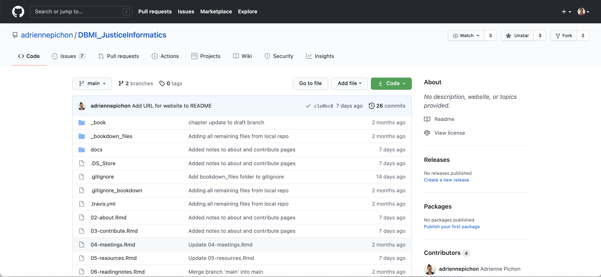
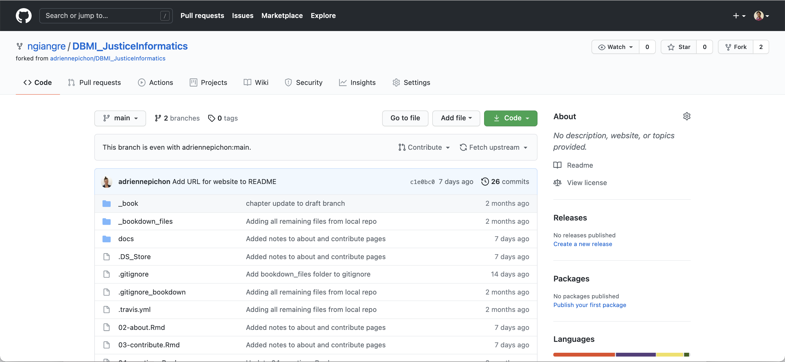
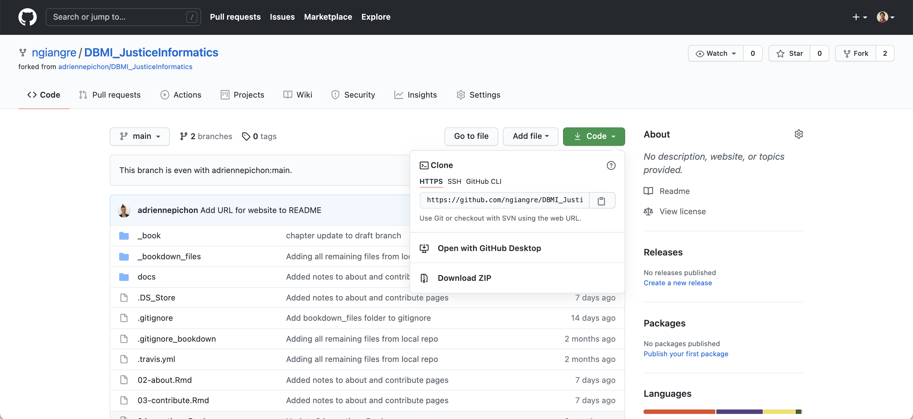
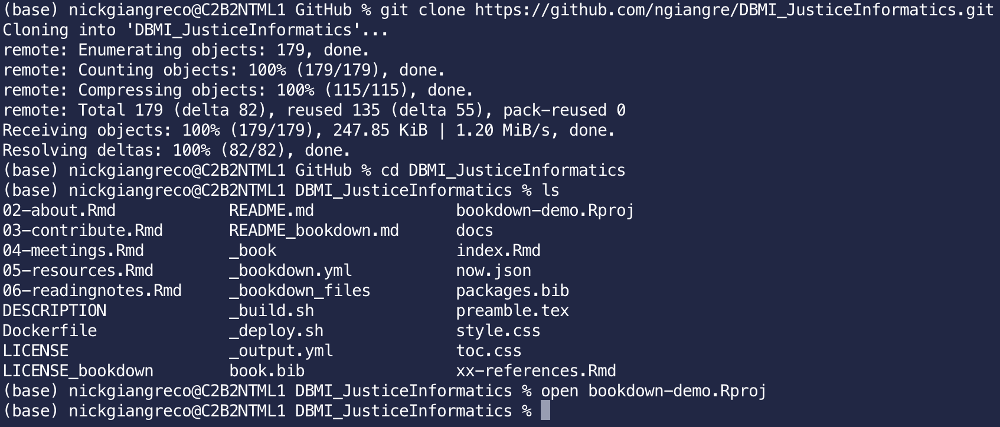
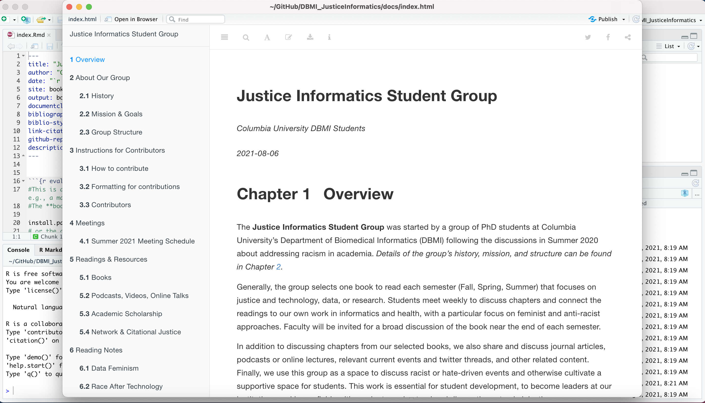

Chapter 3 Instructions for Contributors
3.1 How to contribute
We want everyone to contribute to learning and growing in justice within informatics, but at the same time we don’t want our website to crash! Please follow the following instructions:
- Fork the repository to make a copy within your Github profile. The fork button is at the top right corner of this webpage.
 Where to fork the repository
 Forked repository
- Clone and make any revisions/contributions you may like.
 Where to clone the repository
 Cloning the repository from the terminal
 Knitted local copy of website via RStudio
Stage and commit your revisions/additions to your forked repository.
Make a pull request by clicking ‘make a pull request’ under the contributing button at your repository online, comment on what your pull request is and why it adds to this website, and wait for an administrator to review and possibly accept your pull request.
(Note, in the future we will push to a draft branch; but until we have a ‘live’ version of the site, we will only use the main branch.)
For the website to be updated with new changes, the bookdown must be ‘built’ locally using R, and then the docs folder must be committed and pushed to the main branch.
3.2 Formatting for contributions
3.2.1 New Pages
For contributing a new page:
- Rmd file but without header content; starts with main heading with a hash, eg “# Heading Text”
- Name the file so that it compiles in order (files compile alphanumerically)
3.2.2 Adding Citations
Add the reference to the book.bib file in BibLaTex format (can be set as export format in Zotero, then dragged to text file). Remove extra info (eg, abstract, url dates) so that the bib file stays clean and the reference prints neatly. Try to include a url so that people can jump to the resource on their own.
Using the name assigned in the bib file, add a citation in the text using @name in square brackets, eg, [@washington_medical_2008]
3.2.3 Getting Started with GitHub
Here are some resources for getting started with using GitHub, and contributing to this repository: